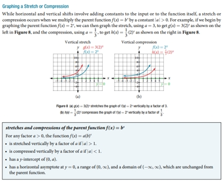
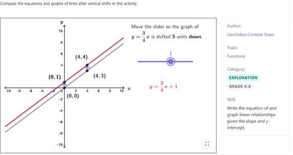
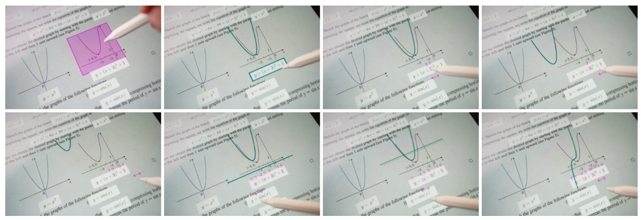
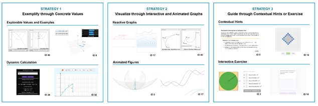
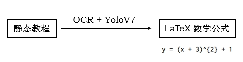
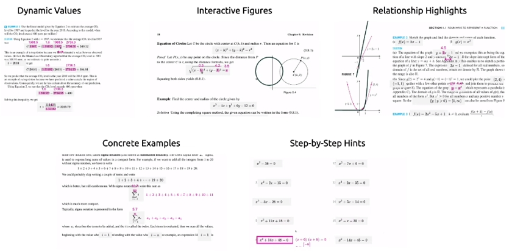
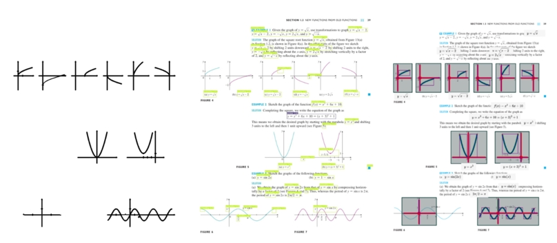
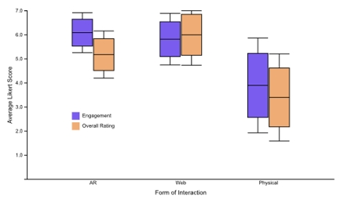
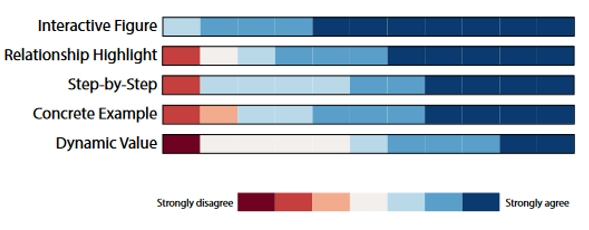

论文：Augmented Math: Authoring AR-Based Explorable Explanations by Augmenting Static Math Textbooks
作者：Neil Chulpongsatorn, Mille Skovhus Lunding, Nishan Soni, Ryo Suzuki
发表：UIST 2023
本文介绍了一种基于机器学习的”增强数学”方法，无需编程即可为静态的数学教材创作AR增强的可探索式解释。为了增强静态文档，该方法首先使用OCR和计算机视觉技术从给定文档中提取数学公式和图形。通过绑定和操作这些提取的内容，用户可以通过移动AR界面看到叠加在文档上的交互式动画。这使得非技术用户，如教师或学生，能够将现有的数学教材和讲义转化为按需和个性化的可探索解释。在设计该方法时，本文首先分析了现有的可探索式数学解释，确定常见的设计策略。基于这些发现，本文设计了一套可以根据提取的内容自动生成的数学增强技术，包括：1）动态值，2）交互式图形，3）关系高亮，4）具体示例，以及5）逐步提示。为评估该方法，本文进行了用户测试和专家访谈。研究结果表明，该方法为学习数学概念提供了更具吸引力的体验。
背景介绍
如今的教科书，无论是数字形式还是实体形式，都主要由静态解释组成，只允许读者被动地读取信息。

而可探索式解释是一种新型的教程范式，这种范式将文本转变为可用于思考的交互式媒介，而不仅仅是一种可供读取的信息来源。这种动态和交互式的解释作为学习辅助工具具有巨大的潜力，因为它们通过引人入胜和有趣的探索促进对抽象概念的更深入理解，而这是仅通过静态教科书很难实现的。然而，创建这些可探索式解释通常需要大量的时间和精力，以及充足的编程专业知识。因此，非技术用户，例如教师和学生，往往只能被动地利用互联网上现有的交互式内容，而他们自己的大部分教科书仍然是静态的。

为解决上述问题，本文提出了一种利用机器学习方法增强静态数学教科书，从而自动创建可探索式数学解释的方法。该方法对静态文本进行信息识别与提取，支持用户绑定与操控交互元素，并以AR或桌面界面呈现。

为设计系统，本文首先分析并总结了常见的交互式数学解释的设计策略。然后，根据总结出的设计策略，实现了包含5种数学增强技术的原型系统。最后，组织普通用户和专家实验证明了系统可用性并评估其教学效果。
总的来说，这篇工作主要有三个贡献:
- 基于机器学习的新方法，通过增强静态数学教科书来创建可探索式解释
- 通过对现有实例的分类分析，设计并实现的一系列增强数学功能实现
- 用户实验和专家访谈的结果和见解
设计策略
首先，本文从互联网上的各种网站收集了 43 例现有的交互式数学解释，总结出三大类常见的设计策略：

策略 Ⅰ - 具体数值举例
第一个策略是用具体值来举例说明抽象和符号数学表示。
大多数网站允许用户使用滑块或文本输入等交互式组件动态更新这些值。
该策略的另一个重要方面是，当用户改变这些值时，相应的方程也会根据动态计算和模拟而改变。
策略 Ⅱ – 动态图形呈现
第一种策略主要关注文本表示，而另一种常见策略则利用动态视觉表示，包括响应式图表和图形动画。
策略 Ⅲ – 提示练习指导
这类策略包括上下文提示和交互式练习。示例包括引用定义来提醒上下文或通过分步说明分解复杂的解决方案。将练习直接纳入解释中可以让用户积极参与内容。
Augmented Math 设计
创作流程
Augmented Math 的创作流程包含4个步骤：
- 扫描&提取：扫描并提取数学教科书或讲义
 - 选择&绑定：选择方程并将其绑定到图形

- 操作：拖动以更改变量值

- 更新：使用变量和图之间的双向绑定

功能设计
为了促进数学教程的多样化互动探索，本文开发了 5 种增强技术：

- 动态数值：动态值允许用户插入和操作文档中提取的符号和变量的具体值。
- 交互式图形：交互式图形为用户提供了通过可探索的视觉表示来理解概念的机会。
- 关系高亮：关系突出显示使用户能够可视化不同变量和视觉参考之间的联系。
- 具体实例：具体示例通过具体实例说明抽象概念来帮助用户。
- 逐步提示：系统通过执行算术运算、简化和分解来自动计算公式的分解。分步提示通过将复杂的数学问题或方程分解为一系列分步说明和解决方案来提供上下文帮助。
评估
技术评估
公式识别：OCR + CnSTD (基于 YoloV7) - 准确率：75%
图形识别：轮廓线识别 + 规则判断 - 准确率：40-76%

用户实验
实验设置
11位参与者（社区人员）
对比系统：AR - Web - 静态教科书
评估目标
- 移动 AR 界面和 Web 界面的可用性
- 移动AR、桌面、静态教科书三者对比
- 功能实用性


专家访谈
- 通过交互增加学习参与感
- 减少创作负担
- 支持自适应内容
- 激发自主学习
讨论
- 实验：自由使用和真实教学场景评估
- 系统：支持更多功能、优化交互设计
- 泛化：适应更多主题和教育场景、基于LLM的公式推理、其他AR界面
总结
- 对于当前教学用途的数学公式的设计策略的总结
- Augmented Math 提供自动的可探索式数学解释生成方法
- 实验证明交互增强的数学解释有效提升学习的参与度和体验感
✉️ zjuvis@cad.zju.edu.cn